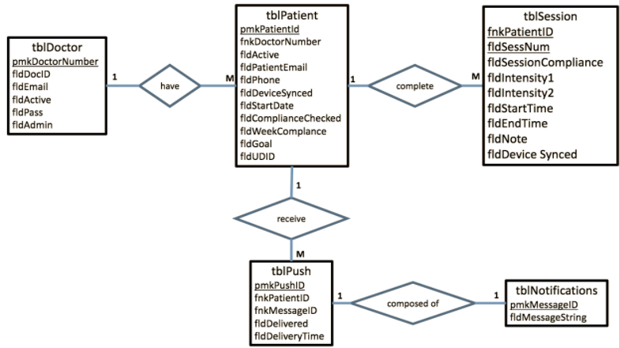

Rehab_Tracker Reference
Rehab_Tracker Reference
Rehab-Tracker iOS App
This is the mobile application codebase, created by Sean Kates and further developed mainly by Tim Stevens. The main features are the BLE connection with the NMES device, using Core Data to save/display data, and transmitting data to the database.
Database Model
The data is saved from the NMES device into Core Data and the database, below is a ER diagram of the database model.

Bluetooth Low Energy (BLE)
The BLE protocol is used to connect with the NMES device and retrieve the rehabiliation session data. The code in the Arduino folder writes the data using unsigned char array to the iOS app once it has established a stable connection. Once data has been recieved, we disconnect from the device, and sync the data to the database.